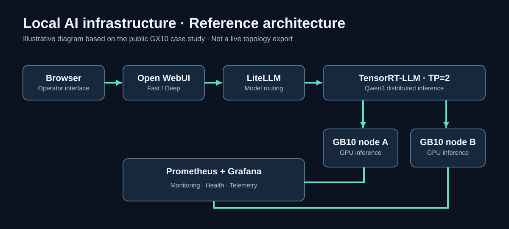
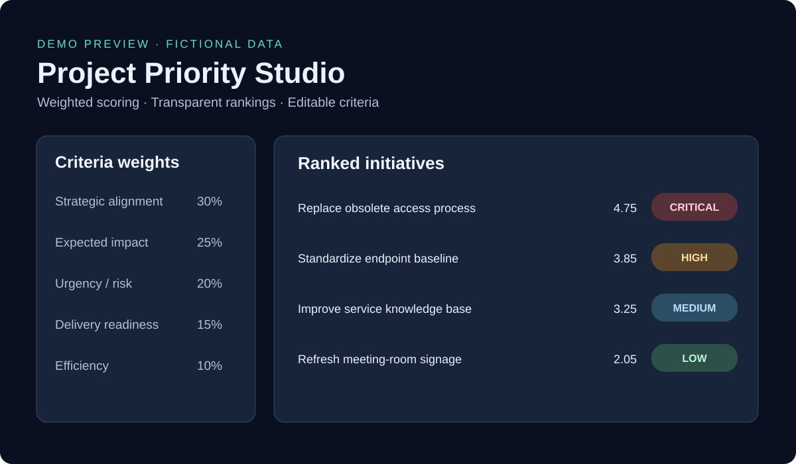

Public case study
Dual-node GX10 AI experiment
Engineering notes from deploying multi-node inference with NVIDIA GB10 hardware, including monitoring, startup reliability, and troubleshooting.
View case study →I'm Dietrich Eubank. I connect enterprise technology leadership with practical engineering—exploring distributed AI, modern workplace services, and decision tools built for real operational outcomes.
Public, responsibly generalized projects and documented experiments. Private workplace and lab configurations are not published here.
Engineering notes from deploying multi-node inference with NVIDIA GB10 hardware, including monitoring, startup reliability, and troubleshooting.
View case study →An interactive weighted scoring and capacity-planning tool with priority rankings, dependency checks, scenario planning, and reports.
Launch scoring tool 2.0 →Planned practical tools for portfolio governance, agent safety, monitoring, and accountable service delivery.
See roadmap →
Project Priority Studio 2.0 expands weighted prioritization with capacity planning, benefit-versus-effort visualization, dependency checks, a printable executive brief, and CSV export. All example data is fictional.

Architecture, reliability lessons and operational decisions from a dual-node private AI lab.
Read case study →Follow a fictional incident from detection to risk review, explicit human approval and a simulated audit trail.
Launch the demo →Public templates for PMO deliverables, scorecards, decision records, RACI and 90-day planning.
Explore templates →Concise articles about durable AI services, portfolio decision making and IT operating reviews.
Read insights →How I connect strategic technology leadership with practical engineering and operational improvement.
About →Define how technology improves the experience, capability, or performance of the organization.
Reliability, observability, security, recovery, and support are part of the product—not afterthoughts.
Document tradeoffs, measure delivery, and keep accountable human review in consequential automation.